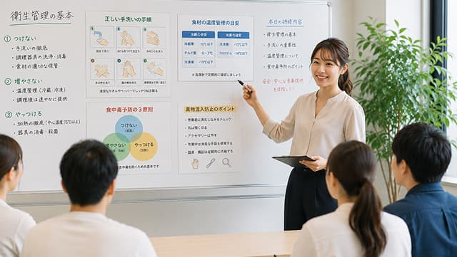

01チームワークを大切にする職場
「このメニュー、もう少し塩加減を変えてみようか」
——先輩との会話は、いつも現場目線。
一人で仕込みを抱え込まず、チームで献立をブラッシュアップしていく文化があります。
- 新人研修プログラム完備
- 定期的な面談でキャリア相談可能
- 困ったときはすぐに相談できる体制

「このメニュー、もう少し塩加減を変えてみようか」
——先輩との会話は、いつも現場目線。
一人で仕込みを抱え込まず、チームで献立をブラッシュアップしていく文化があります。
「シフト制により、家庭や個人の都合に合わせた勤務が可能です。
子育て中の方や家族の介護をされている方も多数活躍中。
無理なく続けられる環境を整えています。
調理技術の向上や資格取得を会社が全面的にバックアップ。
未経験からスタートした先輩が、今では現場のリーダーとして活躍しています。
95%
入社後も安心して働ける環境です
85%
希望通りに休暇が取得できる体制を整えています
42歳
20代〜60代まで幅広い年代が活躍中
100%
ライフステージが変わっても長く働けます
男4:6女
性別を問わず、活躍できる職場環境です
12年
腰を据えて長く働く社員が多数在籍しています
料理が好き、食を通じて人を笑顔にしたいという思いがある方を歓迎します。経験は問いません。
調理は一人ではできません。仲間と協力し、コミュニケーションをとりながら働ける方を求めています。
新しいことに挑戦したい、スキルアップしたいという前向きな気持ちを持った方を応援します。

健康保険、厚生年金保険、雇用保険、労災保険
月3万円まで全額支給
勤続3年以上の正社員対象
自社の食堂を社員価格で利用可能
調理服、エプロン、帽子など必要なものは全て貸与
年1回の健康診断を会社負担で実施
はい、未経験の方も大歓迎です。先輩スタッフが丁寧に指導しますので、安心してご応募ください。
実際に、現在活躍中のスタッフの約40%が未経験からのスタートです。
シフト制で、早番（6:00〜15:00）、遅番（10:00〜19:00）などがあります。
希望のシフトを考慮して調整しますので、ライフスタイルに合わせた働き方が可能です。
はい、可能です。実際の職場の雰囲気を見ていただき、疑問にお答えします。
見学予約フォームまたはお電話でお申し込みください。
年齢制限は設けておりません。
20代から60代まで、幅広い年代のスタッフが活躍しています。
はい、シフト制で働きやすく、お子さまの急な病気などにも柔軟に対応しています。
実際に子育て中のスタッフも多数在籍しており、互いに理解し合える環境です。